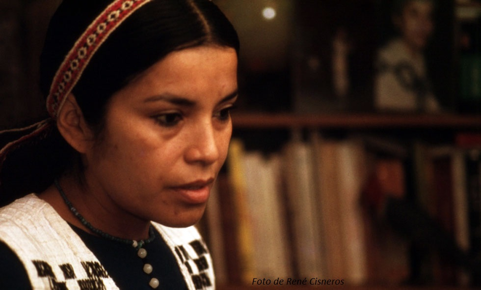

×
Kelluen may Tayül
Canto de Agradecimiento
Canto:
Tu navegador no soporta el elemento de audio.
Narración:
Tu navegador no soporta el elemento de audio.
We we we we an, We we we we. We we we we an, Kelluen, kelluen, kelluen… Wa wa wa wa wa, wa wa wa wa wa... Kelluen, kelluen, kelluen kelluen may!
